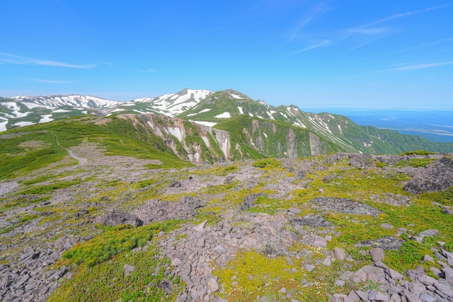
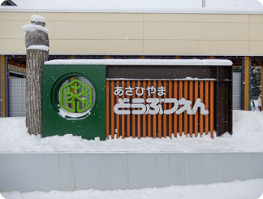
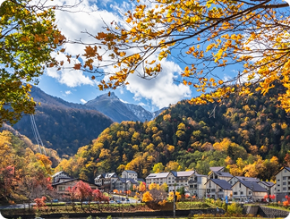
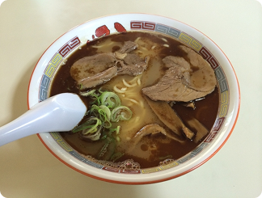
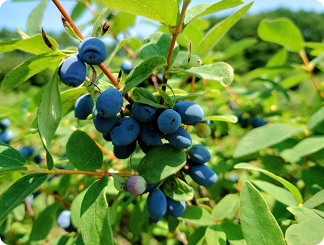

上川地方
kamikawa


kamikawa
「試される大地」の別名を持つ北海道。冷涼な気候が育む四季折々の絶景（ラベンダー畑、紅葉、流氷）、漁場から直送される極上の海産物、そしてジンギスカンやラーメンなどのソウルフード。観光客を飽きさせない多様な魅力が凝縮されています。日本にいながらにして、まるで異国を旅しているかのような開放感と感動に出会える場所です。
アクセス情報
各エリア毎に、おすすめの観光スポットと食事を紹介します
kamikawa
「試される大地」の別名を持つ北海道。冷涼な気候が育む四季折々の絶景（ラベンダー畑、紅葉、流氷）、漁場から直送される極上の海産物、そしてジンギスカンやラーメンなどのソウルフード。観光客を飽きさせない多様な魅力が凝縮されています。日本にいながらにして、まるで異国を旅しているかのような開放感と感動に出会える場所です。


旭川市の旭山動物園は、動物たちの自然な姿を間近で体感できる「行動展示」で人気の動物園です。ホッキョクグマのダイブやペンギンの水中遊泳など、迫力あるシーンを観察できるのが魅力。季節限定イベントも多く、子どもから大人まで楽しめる北海道を代表するスポットです。

上川町・大雪山国立公園の玄関口に位置する渓谷の温泉地です。切り立った断崖が続く壮大な景観に包まれ、源泉かけ流しの湯や多様な宿泊施設でゆったりと過ごせます。冬の「氷瀑まつり」、紅葉の名所めぐりなど四季折々の自然が楽しめます。

旭川ラーメンは、旭川市を代表するご当地ラーメンで、豚骨と魚介を合わせた濃厚な醤油スープと中細ちぢれ麺が特徴です。寒い地域らしく表面のラードで熱を閉じ込め、最後まで温かいまま味わえるのが魅力です。

北海道・上川地方で栽培されるハスカップは、青紫色の小さなベリーで、地元では「北海道ブルーベリー」とも呼ばれます。楕円形の実は1〜2cmほどの小さなサイズですが、甘酸っぱく爽やかな味と、豊富な栄養素で人気です。
各主要都市からのアクセス情報を記載しています
 東京から
東京から 大阪から
大阪から 名古屋から
名古屋から 福岡から
福岡から